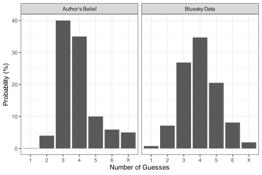
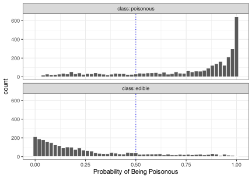
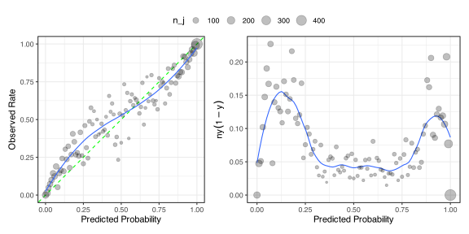
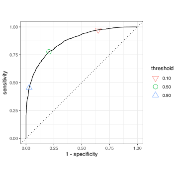
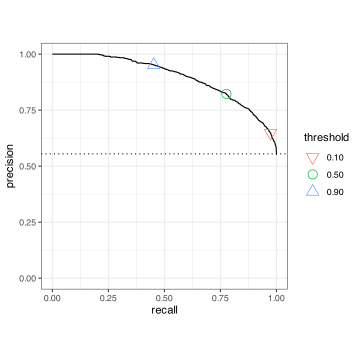
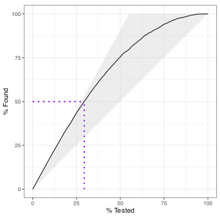
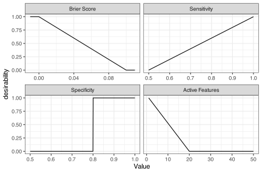

15 Characterizing Classification Models
Classification models are used to predict outcomes that are categorical in nature. There are two types of predictions:
- Hard class predictions are the most likely category in the form of a single qualitative value.
- Soft class predictions are a set of numeric scores, one per category, reflecting the likelihood of each. We’ll focus solely on probability estimates of each class for soft predictions.
Hard class predictions are almost always created by finding the category corresponding to the largest value of the soft predictions.
This chapter discussed important characteristics of qualitative outcomes and appropriate metrics for quantifying how well the model functions. There is an abundance of metrics; we describe many of them here. Additionally, we’ll highlight different aspects of “performance” and when one might be more important than others.
15.1 Class Distributions
An important characteristic of classification outcomes is the prevalence of the classes. This is the frequency at which each class level occurs in the wild. For example, in late 2024, the prevalence of COVID-19 was believed to be between 5% and 7%. The prevalence is not a universal, static constant; it can change by geography and time. However, as we’ll see below, the prevalence can affect the results of many metrics.
For classification models, the prevalence is directly related to Bayes’ Rule. It is the prior distribution for the outcome variable (i.e., \(Pr[y]\) in Equation 12.10). While the prevalence can be estimated from our training set, we should also realize that it should reflect our a priori beliefs (if any) about the outcome data.
For example, Figure 15.1 (left panel) shows the prior for Wordle1 scores as defined by one of the authors. Wordle is a game where the player has six attempts to guess a five-letter word. There are seven levels, the last (an X) representing the case where the player failed to guess the word. The prior for guessing the word on a single try should not be zero but incredibly small. There are thousands of possible words, although many players choose a starter word that they believe optimal2. Guessing the word on two tries is considerably fortuitous, and the author placed a 4% probability of this occurring. There is also the opinion that correctly guessing in three or four turns should consume the bulk of the probability, and values of 40% and 35% were assigned to these. Not guessing the word was also thought to be about 5%. The final prior was (in order) 0.1%, 4%, 40%, 35%, 10%, 5.9%, and 5%.
The figure also shows the distribution of 296,534 self-reported scores across 805 words on the Bluesky social media platform. While more bell-shaped, these data have some potential issues. The first two probabilities, 0.75% and 7.14%, are abnormally high. It is exceedingly unlikely that more than one half of a percent of guesses were correct on the first try, given that there are 805 unique words in this data set3. Also, the second guess probability is only achievable if a highly optimized first word is used rigorously and the player is smiled upon by fortune.
Theoretically, these two distributions should be different since one is the belief of a single person and may not generalize well to the general population of players. However, the prior is about belief and only has a significant effect when the size of the data is small (as previously discussed in Sections 6.4.3 and 12.5.1).
This chapter describes myriad approaches for quantifying how well a classification model functions via performance metrics.
It is very important to carefully choose which metric (or metrics) to optimize a model. The metric defines what your model should consider important, and it will almost always believe that your chosen metric is the only important criterion. This can often lead to unintended consequences.
The next section discusses important characteristics of performance metrics. After this, two sections discuss specific metrics for both types of predictions. Another section discussed the special case where the class levels are ordered (such as with the Wordle scores). There is also a section specifically on model calibration and another describing the use of multiple metrics.
15.2 Choosing Appropriate Metrics
Let’s consider a few critical aspects of classification metrics. We’ll focus on specific metrics computed with hard or soft class predictions to further this discussion. We’ve seen the Brier score used repeatedly in the previous chapters for class probability predictions. As a reminder, this statistic is similar to the sum of squared errors in regression: for each class, the estimated class probabilities are contrasted with their corresponding binary indicators. These differences are squared and averaged. Let’s juxtapose the Brier score with the simplest metric for hard predictions: the model’s overall accuracy (i.e., the proportion of correctly predicted samples).
To start, should our metric be based on hard or soft predictions? This, of course, depends on how the model will be applied to data and how users will consume its predictions. However, a strong argument can be made that performance metrics that use soft predictions should be favored over those using hard predictions. Information theory introduces the idea of self-information: if the value of a variable has some probability \(\pi\) of occurring, we can measure the amount of information using \(I = -log_2(\pi)\) where the units are called bits4.
For binary classification, there are two possible hard prediction values, so the information is \(-log_2(1/2)\) = 1.0 bit. For simplicity, suppose the probability estimates are measured to the second decimal place. In this case, there are 101 possible probability estimates, so the data contain \(-log_2(1/101)\) bits (about 6.7).
This simple analysis implies that metrics that use probabilities will contain much more information (literally and figuratively) than class predictions. As a result, probability-based metrics will be more capable of discriminating between models.
Let’s also consider two examples of how metrics can lead to unintended consequences.
First, accuracy is very sensitive to class imbalances (where one or more classes do not occur very often). Suppose that we have two classes, and one only occurs 1% of the time (called the “minority class” in this context). When accuracy is used for these data, an inferior model can easily achieve 99% accuracy simply by always predicting the majority class. If accuracy is all that we care about, then we can satisfy the literal goal, but our model will probably fail to fulfill the intention of the user5.
The second example contrasts the concepts of discrimination and calibration.
A model can discriminate the classes well when the probability estimates of the true class are larger than the probabilities for the others. In other words, being good at discrimination means that you can, to some degree, successfully discern the true classes
A classification model is well-calibrated when the estimated probability predictions are close to their real theoretical counterparts. In other words, if we estimate a probability to be 55%, the event should occur at this same rate if realized multiple times.
Some metrics favor one of these characteristics over the other. For example, neural networks for classification use binary indicators for their outcome data and try to produce models so that their predictions are near these values. To ensure that the results are “probability like,” meaning that they add up to one and are on [0, 1], the softmax transformation (Bridle 1990) is applied to the raw predictions:
\[ \hat{p}_k = \frac{e^{\hat{y}_k}}{{\displaystyle \sum_{l=1}^Ce^{\hat{y}_l}}} \tag{15.1}\]
where \(C\) is the number of classes, and \(\hat{y}_k\) is a predicted score for class \(k\).
While the softmax method ensures they have the correction range, it does not guarantee that a model with good discrimination is well-calibrated. Figure 15.2 shows a hypothetical example that illustrates what can occur when the softmax method is used. The distributions of the two classes have a good degree of separation, indicating that the model can discriminate the true classes. The observed accuracy is large (98.2%) but the predicted probabilities only range from 38.2% to 63%. It is improbable that the true probability values have such a narrow range, and we can assume that the calibration is poor here. The observed Brier score is large (0.203), supporting this assumption.

In some cases, the pattern shown in Figure 15.2 may be acceptable. For example, if the goal of the model is to identify “events” (such as the most profitable consumers in a database), the model’s calibration may not be important; your main interest is in ranking the rows in a data set. However, we suggest that probability predictions are far more informative than class predictions, and thus, good calibration is a key feature of most classification models.
15.3 Example Data: Poisonous Mushrooms
To demonstrate classification metrics, we’ll primarily use a data set where mushroom characteristics are used to predict whether specific mushrooms are edible or poisonous (Wagner, Heider, and Hattab 2021). These data were obtained from the UCI Machine Learning Archive and we’ll use them in conjunction with a naive Bayes classification model6. This model uses a simplified version of Bayes’ Rule (see Section 17.1.4).
The initial data pool contained 61,069 data points. The main partition of the data was into training (\(n_{tr}\) = 42,748), validation (\(n_{val}\) = 6,107), and test (\(n_{te}\) = 6,107). Additionally, a calibration set of \(n_{cal}\) = 6,107 mushrooms were allocated for the procedures described in ?sec-calibration.
The predictors of the outcome were:
- does bruise or bleed (yes or no)
- cap color (categorical, 12 values)
- cap diameter (numeric)
- cap shape (categorical, 7 values)
- cap surface (categorical, 8 values)
- gill attachment (categorical, 8 values, contains unknowns)
- gill color (categorical, 12 values)
- gill spacing (close, distant, or none)
- habitat (categorical, 8 values)
- has ring (yes or no)
- ring type (categorical, 9 values, contains unknowns)
- season (categorical, 4 values)
- spore print color (categorical, 7 values)
- stem color (categorical, 13 values)
- stem height (numeric)
- stem root (categorical, 4 values)
- stem surface (categorical, 8 values)
- stem width (numeric)
- veil color (categorical, 7 values)
- partial veil (partial or unknown)
The outcome data has relatively balanced classes with 55.5% of the mushrooms being poisonous. It is unclear whether this rate is consistent with mushrooms in the wild.
No preprocessing was applied to the data for this model. Naive Bayes models do not require the categorical predictors to be decomposed into binary indicator columns or transformations of the numeric predictors. As shown above, some predictors have missing data. In these cases, “missing” was added as an additional category.
We’ll fit the model to the training set and, for the most part, use the validation set to demonstrate the various metrics. Figure 15.3 shows the distribution of the probability of the event (poisonous) for the validation set.

These distributions demonstrate a few attractive characteristics. First, the probability estimates span the entire range of possible values, and each distribution peaks at appropriately extreme values (i.e., zero or one). Conversely, the model rarely produces “confidently incorrect” predictions (i.e., erroneously predicting with a large probability estimate). We’ll see this model’s calibration and separation properties in later sections.
15.4 Assessing Hard Class Predictions
We’ll start by focusing on the qualitative predictions: "poisonous" or "edible". Unless otherwise stated, hard class predictions for two-class problems are assigned in this chapter using a 50% cutoff. Alternate cutoffs are investigated in Section 15.7.3.
One of the most fundamental ways to inspect and understand how well hard class prediction performs is the confusion matrix, simply a cross-tabulation of the observed and predicted classes. From this, we can conceptualize where the model underperforms. An excellent model has the largest counts along the diagonal where the observed and predicted classes are the same. For the naive Bayes model, Table 15.1 shows the confusion matrix for the mushroom data’s validation set.
| Prediction | poisonous | edible | |
|---|---|---|---|
| poisonous | 2,613 | 564 | |
| edible | 750 | 2,180 |
It may be helpful to present the confusion matrix in terms of percentages. For example, we might think that the model is worse at predicting the poisonous than edible mushrooms since the lower left cell has a larger count (750) than the upper right cell (564). However, this difference is partially explained by the presence of more poisonous mushrooms in the left column than in the left column of edible samples. It can also be helpful to visualize the matrix as a heatmap where darker colors represent larger counts, especially when there are many possible classes.
We can also view the confusion matrix as a “sufficient statistic” since it has all the information required to compute the metrics based on hard class predictions. For example, the accuracy computed from our validation set was 78.5%, which is
\[ accuracy = \frac{1}{n}\sum_{k=1}^Cn_{kk} \tag{15.2}\]
where \(n_{ij}\) are the number of counts in the i th row and the j th column of the confusion matrix, \(n\) is the total number of data points.
Many of the metrics in this section are in the form of a proportion. For these, confidence intervals can be computed using typical methods for binomial proportions. We suggest using asymmetric intervals, such as the “exact” technique in Clopper and Pearson (1934). See Newcombe (1998) and Meeker, Hahn, and Escobar (2017) for discussions of different methods for computing intervals on proportions. For the validation set results, the 90% confidence interval for accuracy was (77.6%, 79.3%). For other types of metrics, we can use the bootstrap methods described in ?sec-boot-ci to obtain confidence limits.
As previously mentioned, accuracy is misleading when there is a class imbalance. There are a few ways to correct for imbalances, most notably the measure of agreement called Kappa (Cohen 1960). This normalizes the accuracy by a measure of expected accuracy based on chance agreement (\(E\)):
\[ Kappa = \frac{accuracy - E}{1 - E} \tag{15.3}\]
where \(E\) is the expected accuracy based on the marginal totals of the confusion matrix. For two classes, this is:
\[ E =\frac{1}{n^{2}}\sum_{k=1}^2n_{k1}n_{k2} \tag{15.4}\]
Much like correlation statistics, the range of Kappa is \(\pm\) 1, with values of one corresponding to perfect agreement and zero meaning negative agreement. While negative values are possible, they are uncommon. Interpreting Kappa can be difficult since no well-defined values indicate the results are good enough. This is compounded by the fact that the values can change with different prevalences of the classes (Thompson and Walter 1988; Guggenmoos-Holzmann 1996). For this reason, it isn’t easy to compare values between data sets or to have a single standard. There are also differences in range when the outcome data has different numbers of classes; a Kappa value of 0.5 has a different meaning when \(C = 2\) than with some other number of possible classes.
The Kappa statistic can also incorporate different weights for different types of errors (Cohen 1968). This is discussed in more detail in Section 15.9 below.
Using the data from Table 15.1, the Kappa value was 0.568. While subjective, this value probably indicates satisfactory agreement between the true classes and the predictions.
Despite the qualitative nature of the classes, we can also compute a correlation statistic between the observed and predicted classes. Initially developed in the early twentieth century (Ekstrom 2011), the Phi-coefficient was rediscovered by Matthews (1975) and, more recently, is referred to as the Matthews correlation coefficient (MCC). For \(C = 2\), the statistic is:
\[ MCC = \frac {n_{11}n_{22}-n_{12}n_{21}}{\sqrt {n_{1\boldsymbol{\cdot} }n_{2\boldsymbol{\cdot} }n_{\boldsymbol{\cdot} 2}n_{\boldsymbol{\cdot} 1}}} \tag{15.5}\]
where the dot notation indicates the sum of the row or column. More generally, for \(C\) classes:
\[ {\displaystyle {\text{MCC}}={\frac {\displaystyle{\sum_{k=1}^C\sum_{l=1}^C\sum _{m=1}^C(n_{kk}n_{lm}-n_{kl}n_{mk})}}{{\sqrt {{\displaystyle \sum_{k=1}^C\left(\sum _{l=1}^Cn_{kl}\right)\left(\sum _{\substack{k'=1\\k'\neq k}}^C\sum _{l'=1}^Cn_{k'l'}\right)}}}{\sqrt {{\displaystyle\sum_{k=1}^C\left(\sum _{l=1}^Cn_{lk}\right)\left(\sum _{\substack{k'=1\\k'\neq k}}^C\sum _{l'=1}^Cn_{l'k'}\right)}}}}}} \tag{15.6}\]
Like Kappa, the statistic mirrors the correlation coefficient for numeric data in that it ranges from -1 to +1 and a similar interpretation to ordinary correlation coefficients. For the mushroom data, the MCC estimate, 0.569, is very close to the Kappa estimate shown above. This is often the case, and the similarity was investigated more in Delgado and Tibau (2019).
Accuracy, Kappa, and MCC can be computed regardless of the number of classes. There are numerous specialized metrics for \(C = 2\), i.e., “binary classification.”. The next section reviews these, and Section 15.6 describes a few methods for using these binary metrics when \(C > 2\).
15.5 Metrics for Two Classes
It helps to conceptualize metrics for two classes when one class can be defined as the event of interest (i.e., which of the two is most important). The choice mainly affects the interpretation of metrics. For the mushroom data, either class would be appropriate, but we will choose "poisonous" as the event for our descriptions. We’ll also use “positives” to refer to the event of interest and “negatives” for the other class value. From this, we can name those positives correctly predicted as “true positives” (TP) and the accurately predicted negatives as “true negatives” (TN). If a positive sample was incorrectly predicted as negative, we have “false negatives” (FN) and, conversely, “false positives” (FP) for poorly predicted negative samples. Table 15.2 arranges these cases in a 2 \(\times\) 2 confusion matrix.
| Prediction | event | non-event |
|---|---|---|
| event | TP | FP |
| non-event | FN | TN |
There are particular metrics associated with the accuracy of each class. Sensitivity is the probably of correctly predicting the event of interest:
\[ Sensitivity = \frac{\text{correctly predicted events}}{\text{total events}} = \frac{TP}{TP + FN} \tag{15.7}\]
The accuracy of non-events is measured by specificity:
\[ Specificity = \frac{\text{correctly predicted non-events}}{\text{total non-events}} = \frac{TN}{TN + FP} \tag{15.8}\]
We often refer to the false positive rate which is simply one minus the specificity.
Sensitivity and specificity are bedrock metrics for two classes since they represent the two possible ways models can go wrong. In the Statistics literature, they correspond to “Type I” and “Type II” errors, respectively. We’ll examine their relationship below when receiver operating characteristic (ROC) curves are discussed.
With the mushroom data, the sensitivity was 77.7% and the specificity was nearly the same: 79.4%. Since these are simple ratios, confidence intervals can be computed using the same technique for overall accuracy.
These two metrics are commonly reported when a two-class model is evaluated. However, there is a subtle issue in their usage. If we want to know how well the model works, they don’t really answer a question that anyone would ask. For example, sensitivity is the answer to:
Q1: If I know my mushroom is poisonous, what percentage of the time do I correctly predict it to be poisonous?
This is because sensitivity conditions on the sample being positive. If we knew that, we would not require a model to make a prediction. What we would really like to know:
Q2: If I predict this mushroom to be poisonous, what is the probability that it is actually poisonous?
This is a different question that requires more data than just the sensitivity estimate.
To explain, we must return to Bayes’ Rule (Equation 12.10). In this context, the sensitivity is the likelihood term \(Pr[x = poison | y = poison]\) (where \(x\) represents the predicted class). To answer question Q2, what we need is:
\[ Pr[y = poison| x = poison] = \frac{Pr[y = poison] Pr[x = poison | y = poison]}{Pr[x = poison]} \tag{15.9}\]
This equation reflects the idea that we need to know how often the event really occurs (independent of our model). This is the Bayesian prior probability (i.e., the prevalence). If the event rarely happens anyway, that should affect the probability of us predicting it to happen.
For the event class, Q2 is measured by a statistic called the positive predictive value (PPV), which requires sensitivity, specificity, and prevalence:
\[ PPV= \frac{Prev \times Sens}{(Sens \times Prev) + \left((1 - Spec) \times (1 - Prev)\right)} \tag{15.10}\]
Without knowing anything about how often the average mushroom is poisonous, we could choose a prevalence of 50% as an uninformative prior. Our estimate from the training set (55.5%) is close to uninformative so that we will use that in our computations.
With our estimates in hand, the answer to Q2 is
A2: 82.2% of the time, a mushroom is poisonous when we predict it to be.”
The Bayesian analog to specificity is called the negative predictive value (NPV) and has a similar formula:
\[ NPV= \frac{(1 - Prev) \times Spec}{\left(Prev \times (1 - Sens)\right) + \left(Spec \times (1 - Prev)\right)} \tag{15.11}\]
Using the prevalence from our training set and the metrics computed on the validation set, the NPV estimate is 74.4%.
The PPV and NPV are functions of three quantities, and it might be challenging to understand how the prevalence can affect the statistics. Figure 15.4 can help us understand these relationships. For example, if the prevalence is near zero, achieving an acceptable PPV value may be difficult unless the specificity is perfect (in which case it is quite easy to attain a good NPV).
#| '!! shinylive warning !!': |
#| shinylive does not work in self-contained HTML documents.
#| Please set `embed-resources: false` in your metadata.
#| label: fig-prevalence
#| viewerHeight: 550
#| standalone: true
library(shiny)
library(dplyr)
library(purrr)
library(ggplot2)
library(patchwork)
library(bslib)
source("https://raw.githubusercontent.com/aml4td/website/main/R/shiny-setup.R")
# ------------------------------------------------------------------------------
ui <- fluidPage(
# theme = grid_theme,
layout_columns(
fill = FALSE,
col_widths = breakpoints(sm = c(-3, 6, -3)),
column(
width = 10,
sliderInput(
inputId = "prev",
label = "Prevelance",
min = 0,
max = 1,
value = 1/2,
width = "100%",
step = 1/20
)
)
),
as_fill_carrier(plotOutput('results'))
)
server <- function(input, output) {
ppv_fn <- function(sens, spec, prev = 1 / 2) {
( sens * prev ) / ( (sens * prev) + ( (1 - spec) * (1 - prev) ) )
}
npv_fn <- function(sens, spec, prev = 1 / 2) {
( spec * (1 - prev) ) / ( ( (1 - sens) * prev) + ( (spec) * (1 - prev) ) )
}
output$results <-
renderPlot({
x <- seq(0, 1, length.out = 50)
n <- length(x)
cond_x <- (0:4) / 4
rng <- extendrange(0:1, f = 0.02)
###
pos_df <- expand.grid(spec = cond_x, sens = x)
pos_df$prev <- input$prev
pos_df$PPV <- ppv_fn(pos_df$sens, pos_df$spec, prev = pos_df$prev)
pos_df$Specificity <- format(pos_df$spec, digits = 3)
pos_p <-
pos_df %>%
ggplot(aes(x = sens, y = PPV, col = Specificity)) +
geom_line(linewidth = 1) +
lims(x = 0:1, y = rng) +
theme_bw() +
theme(
legend.position = "top",
legend.text = element_text(size = 9)
) +
scale_color_brewer(palette = "Reds") +
labs(x = "Sensitivity")
###
neg_df <- expand.grid(sens = cond_x, spec = x)
neg_df$prev <- input$prev
neg_df$NPV <- npv_fn(neg_df$sens, neg_df$spec, prev = neg_df$prev)
neg_df$Sensitivity <- format(neg_df$sens, digits = 3)
neg_p <-
neg_df %>%
ggplot(aes(x = spec, y = NPV, col = Sensitivity)) +
geom_line(linewidth = 1) +
lims(x = 0:1, y = rng) +
theme_bw() +
theme(
legend.position = "top",
legend.text = element_text(size = 9)
) +
scale_color_brewer(palette = "Blues") +
labs(x = "Specificity")
print(pos_p + plot_spacer() + neg_p + plot_layout(widths = c(6, 1 , 6)))
}, res = 100)
}
app <- shinyApp(ui, server)
appThe predictive value metrics are rarely quoted since they are more complex and rely on good prevalence estimates. They also tend to give worse impressions of model efficacy than sensitivity and specificity.
Sensitivity and specificity (and PPV/NPV) measure opposite types of errors. When paired, they are most appropriate when the overall model quality is important. In contrast, we’ll now consider a few other metrics for two-class problems, focusing primarily on the event class.
The field of Information Retrieval (IR) focuses on finding relevant documents from a large collection. Once a training set of documents is labeled (as relevant or not), IR systems consume the document’s contents (mostly text) and use those data to predict whether a new document is relevant. In our previous discussion, the event of interest is when the true class of the outcome is “relevant.” The term “retrieved” is also used to define the identified documents, meaning the documents that have been predicted to be relevant (i.e., TP + FP).
The primary two metrics used in information retrieval are precision and recall. Precision is the proportion of relevant documents in the data set that have been identified:
\[ Precision = \frac{\text{relevant and retrieved}}{\text{total retrieved}}=\frac{TP}{TP + FP} \tag{15.12}\]
For example, in the validation set, our naive Bayes model has predicted that 3,177 mushrooms were predicted/identified to be poisonous using a 50% cutoff. Of these, 2,613 were truely poisonous. The ratio of these values produced a precision value of 74.4%.
It is sometimes said that precision is the same as the positive predicted value. However, this is only the case when the prevalence is 50% (i.e., balanced classes). For information retrieval, it is doubtful that the event rate would be so large (otherwise, documents would be very easily found).
The recall is the rate that identified documents are actually relevant:
\[ Recall = \frac{\text{relevant and retrieved}}{\text{total relevant}} = \frac{TP}{TP + FN} \tag{15.13}\]
This is the same as sensitivity.
These two metrics are sometimes qualified by how many of the top K documents are found (e.g., “precision@K”).
Also related are F-measures, which are combinations of precision and recall. For example, the \(F_1\) score is the harmonic mean of precision and recall:
\[ F_{1}=2\left(\frac{precision \times recall}{precision + recall}\right) \tag{15.14}\]
More generally, the F-score can be written as
\[ F_{\beta}=(1+\beta_2)\left(\frac{precision \times recall}{(\beta^2 \times precision) + recall}\right) \tag{15.15}\]
Statistics called gain (or sometimes lift) quantify the number of relevant data points found relative to chance. These depend on a probability cutoff defining which samples are retrieved. For a set of \(n\) samples, suppose that \(n_{prev}\) is the number expected to be relevant by chance. For some threshold \(t\), let \(n_t\) be the number of retrieved documents that are truly relevant (such that \(Pr[event]\ge t\)). The gain at threshold \(t\) is then
\[ Gain_t = n_t / n_{prev} \tag{15.16}\]
so that \(Gain_0 = 1\) and \(Gain_1 = 0\). We’ll consider this metric again in Section 15.7.6.
It is worth reiterating that precision, recall, \(F_{\beta}\), and Gain serve a completely different goal than sensitivity and specificity. They are focused on finding events in the data, while sensitivity and specificity are concerned with overall model quality by balancing the two possible error types.
15.6 Weighted Performance Metrics
Two class performance metrics are convenient summaries and are generally interpretable. As we saw earlier in this chapter, the metrics of accuracy and Kappa naturally handle more than two classes. Because of the desirable characteristics of other two-class performance metrics, conventions have been constructed to extend these metrics (Lewis 1991). These conventions can be applied to any two-class metric. We will use sensitivity, S, to illustrate the conventions.
The first approach, macro averaging, computes \(C\) versions of the statistic using a “one-versus-all” approach. For example, when \(C = 3\), \(S_1\) is the sensitivity when the first class is considered the event and the second and third classes are pooled into the non-event category. \(S_2\) is the sensitivity when the second class is considered the event, and so on. The macro estimate of sensitivity is computed as their average:
\[ S_{macro} = \frac{1}{C}\sum_{k=1}^C S_k \tag{15.17}\]
where the \(S_k\) are the one-versus-all metrics.
A naive average of sensitivities is appropriate when the classes are balanced. When the classes are unbalanced, an unweighted average will bias this metric towards the sensitivity of the largest class. To account for class imbalance, weighted macro averaging uses the class frequencies \(n_k\) as weights
\[ S_{macro, wts} = \sum_{k=1}^C \frac{S_k}{n_k} \tag{15.18}\]
Finally, micro averaging is more complex because it aggregates the ingredients that go into the specific calculations. Sensitivity, for example, requires the number of true-positive and false negatives. These are summed and used in the regular computation of sensitivity:
\[ S_{micro} = \frac{{\displaystyle \sum_{k=1}^C TP_k}}{\left( {\displaystyle \sum_{k=1}^C TP_k} \right) + \left( {\displaystyle \sum_{k=1}^C FN_k} \right) } \tag{15.19}\]
Note that many performance metrics naturally work with three or more classes. There is little point in using these averaging tools for: accuracy, Kappa, MCC, ROC AUC, and others.
15.7 Evaluating Probabilistic Predictions
As previously stated, class probabilities have far more information than categorical class predictions. We’ll describe common metrics that use these quantitative estimates. A few of these utilize indicators for different classes. We’ll denote binary indicators for class \(k = 1, \ldots, C\) and sample \(i = 1, \ldots, n\) as \(y_{ik}\). For binary data, we use \(k=1\) to define the event of interest and \(k=2\) as the non-event so that \(y_{i1} = 1\) and \(y_{i2} = 0\).
15.7.1 Cross-Entropy
Cross-entropy is one of the most commonly used metrics for evaluating class probability estimates. It evaluates the difference between two probability distributions. For classification models, it is the distance between the predicted probabilities (\(\hat{p}_{ik}\)) and their true values. The latter terms are represented by their binary indicators (\(y_{ik}\)). The general equation is:
\[ CE = -\frac{1}{n}\sum_{i=1}^n\sum_{k=1}^Cy_{ik}\log(\hat{p}_{ik}) \tag{15.20}\]
where we assume that none of the estimated probabilities are zero. For the special case of \(C=2\) classes, it simplifies to:
\[ CE = -\frac{1}{n}\sum_{i=1}^n \left[y_{i1}\log(\hat{p}_{i1}) + y_{i2}\log(1 - \hat{p}_{i1})\right] \tag{15.21}\]
since \(\hat{p}_{i2} = 1 - \hat{p}_{i1}\). A good model minimizes cross-entropy.
There is an alternative way to view this statistic. It turns out that if we assume the outcome data independently arise from a Bernoulli distribution with an event probability of \(\pi\), the corresponding likelihood statistic is
\[ \ell(y_{ik}; \pi) = \prod_{i=1}^n \pi^{y_{i1}} (1 - \pi)^{y_{i2}} \tag{15.22}\]
We’ve described that, by maximizing the likelihood, we find values(s) of the parameter(s) that explain the data best. To improve numerical stability, we typically try to minimize the negative log-likelihood. Logging \(\ell(y_{ik}; \pi)\) and substituting our estimate \(\hat{p}_{i1}\) for \(\pi\), we also arrive at:
\[ -\log \ell(y_{ik}; \hat{p}_{i1}) = -\sum_{i=1}^n \left[y_{i1}\log(\hat{p}_{i1}) + y_{i2}\log(1 - \hat{p}_{i1})\right] \tag{15.23}\]
which is the same as cross-entropy. When there are more than two classes, the same equivalence can be shown to the multinomial log-likelihood. Often, with classification models, this statistic will be referred to as “log loss7”.
Cross-entropy can be an effective objective function for classification. On the theoretical side, it also has the characteristic of being a proper scoring rule; it is optimized at the true probability distribution. We’ll see a little more about this below when Brier scores are discussed.
One issue is that the scale of the value is not interpretable. For example, knowing that the cross-entropy value for our naive Bayes model is 0.455 does not obviously indicate whether that value is good or bad. We can determine what a poor value of cross-entropy is for this data set by repeatedly permuting the true class column of the validation set, recomputing the metrics, and taking the average. This gives us an estimate of the metrics when there is no connection between the observed classes and their predictions. Following this approach with 100 permutations, the baseline cross-entropy of a poor model was 0.551.
Also, there can be numerical issues when some probability estimates are at or near zero; \(\log(\hat{p}_{ik})\) can diverge quickly to a large negative number and is undefined as zero. The common correction for these issues is to cap the probability estimates to a very small number. This helps avoid \(\log(0)\), but there is still the issue that extremes of the probability scale have more dramatic emphasis (and influence) on the metric.
15.7.2 Brier Scores
We want our probability estimates to be as close as possible to their true values. For classification, we don’t know the true probability values; we only have the observed class and the corresponding indicators for each class level. Similar to regression, we can use a metric that measures the squared distance between the observed and predicted probabilities, \(y_{ik}\) and \(\hat{p}_{ik}\), respectively. For a binary outcome, that metric is called the Brier score8 and has the form:
\[ Brier = \frac{1}{n}\sum_{i=1}^n(y_{i1} - \hat{p}_{i1})^2 \tag{15.24}\]
See Brier (1950) and, more recently, Bella et al. (2013). A perfect model would estimate probabilities to be either 1.0 or 0.0, depending on the class, and would minimize this statistic. What would an ineffective model produce? While there is only one way to be perfect, there are many ways in which a model could produce poor estimates. Let’s say the model is completely equivocal and every prediction for this binary outcome is 0.5. In this case, we are summing repeated values of 0.52 so that the bad models would have scores \(\ge\) 0.25. This serves as a good rule of thumb, but a better (but more complex) approach is via the permutation method previously described.
Looking at our mushroom model, the Brier score was estimated as 0.1502 with 90% bootstrap confidence limits of (0.1452, 0.1553). The permutation estimate shows that a poor model would have an average score of 0.5202. While not perfect, the model can achieve a fairly small average squared error.
In some cases, Equation 15.24 is written with the components for both classes. In this case, the possible range of values and the rule of thumb value would be doubled. While Stanski, Wilson, and Burrows (1989) recommends dividing the score by the number of classes to maintain a range of [0, 1], there does not appear to be an established convention for this aspect of the Brier score. The more general equation for any number of classes is:
\[ Brier = \frac{1}{nC}\sum_{i=1}^n\sum_{k=1}^C (y_{ik} - \hat{p}_{ik})^2 \tag{15.25}\]
Based on this equation, a more general version of our rule of thumb would be \((1 - (1/C))^2\) for the worst-case Brier score. For example, with ten class levels, an unsatisfactory model would have a score around 0.81. We’ll use this version of the Brier score so that values are always between zero and one.
This metric has some interesting qualities that make it attractive. As previously mentioned, a perfect model has a score of zero. If a performance metric achieves its smallest value when the probability estimate is perfect, it is called a proper scoring rule. There are theoretical benefits to using such a metric which Kruppa et al. (2014) describes succinctly:
The Brier score is a strictly proper score (Gneiting and Raftery 2007), which means that it takes its minimal value only when the true probabilities are inserted as predictions. Phrased differently, it is not possible to improve the Brier score by systematically predicting probability values other than the best estimate.
Additionally, the Brier score can be partitioned into more specific components that measure different aspects of the model fit (similar to the variance-bias decomposition from Section 8.4). Sanders (1963) split the Brier score into two components: “reliability” and “resolution.” This requires the probability estimates to have replicate values, i.e., the estimated probability values are not unique.
Let’s demonstrate with a binary outcome (\(C = 2\)). Suppose out of \(n\) data points there are only \(n_p\) unique values of \(\hat{p}_{i1}\). We’ll denoted these unique values as \(\hat{p}_{j}\) (\(j=1, \ldots, n_p\)) each occuring with frequency \(n_j\).
Earlier, we remarked with dissatisfaction that the only representations we have of the true probability estimates are the binary indicators \(y_{i1}\). Now, we are in a more interesting situation: for each unique probability estimate, we have \(n_j\) values, and the mean of the \(y_{i1}\) is a higher resolution representation of the true values. This lets us get a little closer to a situation where we can contrast our estimates with the truth (to some degree). We’ll denote the mean of the \(y_{i1}\) indicators corresponding to probability \(j\) as \(\bar{y}_j\).
We can then partition the Brier score into:
\[\begin{align} Brier &= \frac {1}{n_p} \sum_{j=1}^{n_p}n_{j}(\hat{p}_{j} - \bar{y}_j)^2 + \frac {1}{n_p} \sum_{j=1}^{n_p}n_{j} \bar{y}_j (1 - \bar{y}_j) \label{eq-brier-cal} \\ &= \text{reliability} + \text{refinement} \notag \\ \end{align}\]
Reliability compares our more refined values of “truth” with our model’s estimates; this is as close as we can get to the previously stated goal of calibration. We should minimize this value.
Refinement is interesting because it indirectly uses the model probability estimates (by contributing the \(j\) data groupings). The pattern \(\bar{y}_j (1 - \bar{y}_j)\) also drives the binomial variance and the Gini Index9. This pattern measures impurity. The best-case scenario is that the true outcome values for every unique model probability estimate are the same as possible. We want to minimize this term too. Murphy (1973) shows how to further divide refinement, and Yates (1982) compares the two decompositions.
This partition could be very helpful, except for the problem that most models produce nearly unique probability estimates. For example, there are 6,107 mushrooms in our validation set and 6,100 unique predictions. To show how the decomposition could be useful, we’ll artificially round our probabilities to the second decimal place, yielding 101 unique predictions. Figure 15.5 shows the \(n_p\) = 101 values for the reliability and refinement terms. On the left, we can see a strong linear relationship between the estimates and the \(\bar{y}_j\). The calibration is more variable in the middle of the probability range, and there is some deviation from the diagonal line when the estimates are in the range of [0.1, 0.5] (a smoothed line is shown in blue).

The right-hand panel shows the refinement data. The extreme ranges of the probability estimates are very pure. Just outside of the extremes, the values spike around 0.20 and 0.85.
If we can construct them, these diagnostic plots can help us determine where the model may lack correctness. We’ll see related plots in ?sec-calibration.
Finally, compared to cross-entropy, the Brier score has a slight advantage in how extreme probabilities influence the overall statistic. Recall that the logarithm of the probabilities might be problematic when estimates are close to zero. The Brier score is less affected due to its use of squared terms. At most, an extreme probability estimate has a definitive limit to how much it can impact the overall score.
15.7.3 Reciever Operating Characteristic Curves
Earlier, we found that our naive Bayes model had a sensitivity of 77.7% and a specificity of 79.4%. Since a false negative might end up poisoning someone, we might want to increase our sensitivity to identify every poisonous mushroom we can. One way to do this is to lower the weight of evidence required to make a class prediction of “poisonous.” The sensitivity and specificity quoted above correspond to a rule where a 50% probability or more indicates poison. What if we were to loosen that threshold and make it 10% so that we classify as an event if \(Pr[poisonous] \ge 0.10\)?
In doing this, we will designate many more mushrooms as poisonous and, as a result, the sensitivity increases to 97.4%. Now, we’re identifying almost all of the poisonous mushrooms. The consequence is that many of these newly classified mushrooms are actually edible. The specificity falls to 35.2%. That might be acceptable; we would probably want to discard perfectly edible mushrooms to avoid being poisoned.
If our model’s application was more focused on specificity, we could raise the threshold about 50%. In this case, we increase specificity but do harm to sensitivity (by designating fewer samples to be events).
The point of this exercise is to demonstrate that the default 50% cutoff for binary classification might not be satisfactory for our model’s application.
This presents some difficulty, though. We probably want to know the sensitivity and specificity to determine whether the model is good enough or compare it to others. Should we optimize the probability cutoff for each model as it is being developed? How would we pick an appropriate threshold?
The receiver operating characteristic (ROC) curve was designed to do just that. The points on the curve are created by looking at many cutoff points10 and track how the sensitivity and specificity change. The curve is created by plotting the true positive rate (i.e., sensitivity) on the y-axis and the false positive rate (one minus specificity) on the x-axis. Figure 15.6 shows this curve for our naive Bayes predictions where three cutoffs are highlighted: 10%, 50%, and 90%.

The points along the curve help us make tradeoffs between sensitivity and specificity. For example, we might want to increase the sensitivity further. However, there is not much more vertical space above the point that identifies the 10% cutoff. In moving along the curve to the right, we gain a little more sensitivity, but the loss of specificity would result in far more false positives than we gain in finding true positives.
The ROC curve has a few more features that help with model development. The best-case model is one where the distributions of the predicted class probabilities are separated by the true classes. In this case, the ROC curve would start in the lower left corner and go directly to the upper left corner, where the sensitivity and specificity are both at 1.0. The curve would then directly move to the upper right corner. Since the ranges of the two axes are between zero and one, the area under the curve for this perfect model is 1.0.
What if our model was incapable of learning anything from the data? Choosing a threshold for this ineffective model would not change the sensitivity and specificity, and, as a result, the curve would move along the dotted diagonal line shown in the figure11. In this situation, the area under the curve would be about 0.5. For Figure 15.6, the ROC AUC was 0.871.
Based on these patterns, we can use the area under the ROC curve as an optimization metric to differentiate or rank different models (or tuning parameter candidates). This single metric value encapsulates all possible thresholds. This allows us to avoid finding an optimal cutoff for each model during development; we can wait until we have narrowed our choice of the model down to a few and then examine their ROC curves to determine the best sensitivity and specificity for the situation. We could show the different ROC curves in the same plot, and the curve that moves closer to the upper left corner is better than the others.
Of course, there are disadvantages to summarizing an entire curve with a single number. Some models might have portions of their curves that show superiority to others, but not uniformly. If a particular section of the curve is specifically interesting, a partial area under the ROC curve can be computed (McClish 1989) and might offer a more selective metric.
It can also be difficult to conceptualize what the area under the curve means, how important the difference in AUCs is, and so on.
The ROC curve is defined for data sets where the outcome has two classes. However, Hand and Till (2001b) derived a method to calculate a single AUC when there are three or more classes. Hanley and McNeil (1982) had previously recognized that the ROC AUC has a form equivalent to the Wilcoxon statistic (and the Gini Index). Given this, Hand and Till derived a method to combine the AUC values of all pairwise ROC curves to find an overall metric. While it is possible to derive a standard error (and confidence intervals) of a single ROC curve, the authors suggest using bootstrap methods to estimate these statistics for multiclass ROC AUCs.
Finally, the most critical information about ROC curves is that they measure how well we can separate the classes. It is very possible to have a high ROC AUC and a very poor Brier score; see Figure 15.2 for a previous example.
15.7.4 Precision-Recall Curves
Like the ROC curve, the PR curve plots the two statistics against one another, with recall being on the x-axis for all possible probability thresholds. Unlike the ROC curve, the threshold determines how many of the most likely items should be retrieved. Figure 15.7 shows the results for our example data set. We start the curve from the left-hand side where the threshold is zero, meaning that samples where the probability of the event is greater than zero (i.e., all of them) are selected. The recall is perfect since we have selected all of the relevant items. The precision is equal to the event rate since we have all the true and false positives.
As we increase the threshold, we select fewer items, and the recall decreases and eventually becomes zero at the left-hand side of the curve since no documents are selected. In contrast, the precision increases since the ratio of the selected true positives increases.

Note that neither the precision or recall (Equations 15.12 and 15.13) directly use the true negative component of the confusion matrix. This reflects the focus of these two statistics on finding positives.
While that the ROC curve has its optimal point in the top left, the optimal setting for PR curves is in the plot area’s top right. We can also summarize the PR curve using the under the curve, a value of one being the best. Based on Figure 15.7, the PR AUC was 0.899.
However, note that the horizontal baseline value for the curve corresponds to the prevalence. The PR curve baseline, unlike ROC, moves with outcome distribution. This complicates the understanding of the AUC since the baseline section of the curve moves from data set to data set, and it may not be obvious just by looking at the AUC value.
15.7.5 Comparing ROC and PR Curves
Many resources both in social media, blog posts, and the literature (Ozenne, Subtil, and Maucort-Boulch 2015; Saito and Rehmsmeier 2015) make the claim that:
- PR curves should always be used for models with class imbalances and
- ROC curves are ineffectual with rare events.
Many of the arguments made about these effects are not correct. One assumption is that when there is a class imbalance, the goal is always to identify events in a population (i.e., information retrieval). Indeed, a curve based on metrics important to information retrieval will always be better at information retrieval than alternatives. However, there are many instances where we are interested in knowing that there is good class separation even though one class occurs infrequently.
Let’s look at a real example. Pharmaceutical companies use machine learning to derisk drug candidates by predicting the probability that the potential drug has different types of toxicity. For example, Maglich et al. (2014) considered models using laboratory tests to predict whether some molecules can cause steroidal toxicity. Kuhn (2016) provides a summary of these types of predictive models.
Suppose we have a sufficiently sized training set of relevant drug candidates and have used laboratory tests and other data to label them as “toxic” (the event of interest) or “non-toxic.” Let’s assume that the toxicity prevalence is around 1% in the population of molecules of interest.
Once deployed, a model would be used as follows: a medicinal chemist designs a potential drug in-silico (i.e., via a computer). They pass the chemical structure to a machine learning model that can predict the probability of being toxic.
In this instance, the key goal of the machine learning model is that it should be able to accurately distinguish toxic from non-toxic and that the predicted probabilities are well-calibrated. If there is any indication of toxicity, the chemist will be keenly interested in knowing how well the model can differentiate events from non-events12. The estimate of the true negative rate is just as important to the chemist as the false positive rate.
The context here is that the model is being used to screen new items for the event of interest. The model’s users want to be confident in its quality when events or non-events are predicted. The focus is not solely on finding events (individually or within a collection of items).
In this scenario, the quality of the model should be assessed using multiple metrics: the ROC and PR curves, as well as the Brier score. We’ll show a technique for blending metrics in ?sec-multi-objectives.
Let’s also look at a counterexample where a PR curve has more utility than other metrics. Suppose we work for a retailer trying to find customers in their database who will most likely make a large purchase within a year. We can create a machine learning model to predict this event based on their demographics, previous purchases, and other predictors. We can apply this model to new customers. Still, the initial goal is to find the target customers from the existing data, so the company might send a promotional offer to incentivize them to purchase.
We are looking for customers in an existing database to find positives. There is less emphasis on accuracy on the truly negative customers; there isn’t much downside to offering a promotion to someone unlikely to act on it. Good discrimination isn’t very important, and neither is calibration if we will be choosing the top X% of most likely customers. In this instance, the PR curve is clearly more appropriate for the job.
Some technical characteristics that relate the two curves to one another, gathered from Davis and Goadrich (2006):
- For a specific data set, the ROC and PR curves use the same data points but highlight different aspects of them.
- When comparing two models, one ROC curve is uniformly better than the other only if this is also true with the PR curves.
- If one model has the best ROC AUC, there is no guarantee that the same is true for the PR AUC.
When choosing between these two curves, we should consider how aligned our goals are with the goal of the modeling problem.
15.7.6 Gain Charts
Gain charts (a.k.a. lift charts, a.k.a. cumulative accuracy profiles) create a curve that modulates the probability threshold \(t\) described in Equation 15.16. If we are looking for relevant documents, we can determine how many (or what percentage of) our unknown samples we should retrieve to achieve our goals.
Figure 15.8 shows the results where the x-axis is the percentage of data points retrieved, and the y-axis is the percentage of relevant retrieved samples. The grey background reflects the feasible region that contains possible curve values13.
In this example, the curve is close to the best possible results until roughly 25% of the samples have been retrieved. The dotted lines show that we would need to retrieve about 30% of the data set to acquire half of the truly relevant samples (on average)

One could summarize this curve by computing how much of the feasible region is covered by the curve.
15.8 Measuring and Improving Calibration
We often talk about a model having good calibration, but, as noted by Lichtenstein, Fischhoff, and Phillips (1977), calibration is really a characteristic of a single prediction. A prediction is well-calibrated if the probability estimate is close to the true value. We have no way of knowing or proving this. We can conceptualize that, if we could repeatedly collect the data point, the rate at which the event occurs should match our prediction.
As seen in a previous section, the only numeric estimates we have for the true value are the binary indicators for each class (\(y_{ik}\)). Unfortunately, these values do not facilitate diagnostics to assess how well our model works for an individual data point14.
The primary diagnostic for classification models is the calibration plot of the entire data set (a.k.a. the reliability diagram). For two-class outcomes, this plot is usually created by ordering the data by the estimated probability of the event and binning these into groups (usually ten). From these groups, we can compute the event rate from the outcome data and plot that rate against the midpoint of the bins. The points should fall on a 45-degree diagonal line if the model is well-calibrated. Here, we are assessing statistics involving multiple data points and inferring whether the model is calibrated in general (i.e., not for individual points).
Figure 15.9 shows this type of curve for two models. Panel (a) shows the validation results for our naive Bayes model. The points fall on a fairly straight line, demonstrating good overall calibration. Panel (b) has the same visualization for a boosted tree model limited to only three trees in the ensemble. The result is a curve that is not close to the diagonal. The points on the lower left indicate that the predicted probabilities are much larger than they should be. The opposite occurs in the upper right of panel (b); the probabilities are generally underestimated when compared to the rate in the groups.

The downside to this binning approach is that, for small data sets, the results can have very large variability, or there may not be enough data within each bin to make accurate judgments regarding calibration. One alternative is to use moving windows. For example, for a fixed bin width of 0.20, we compute the required statistics and then move the bin by a small amount (say 0.02). This would result overlapping groups that would slide across the range of probability values. Figure 15.10(a) shows the results for the naive Bayes model. This visualization is more capable of demonstrating more nuance in the results.

Another alternative is to fit a model to the data. Logistic regression is a relatively simple classification model for binary outcomes and is discussed in ?sec-logistic-regression. We can fit this model using our observed outcomes and use the estimated class probabilities (\(\hat{p}_i\)) as the predictor. If the probabilities are well-calibrated, the model should show a linear relationship. Another feature that can be used in this diagnostic is to model the predictor with a smoothing spline. This enables the logistic model to reflect where in the data range the calibration is very poor. Figure 15.10(b) illustrates the same pattern as the moving window but uses all the data simultaneously.
What can be done with poorly calibrated predictions? There are approaches for postprocessing the predicted probabilities to have higher fidelity to the observed data. The customary method is to use a logistic regression fit, as seen in Figure 15.10(b), to recalibrate the predictions. First a suitable logistic regression model is created in the same manner as the one used for diagnosis. Recall that the original estimates are used as predictors of the model. To recalibrate a set of predictions, the original values are pushed through the model, and the resulting logistic regression values are used to create new probability predictions.
Platt (1999) proposed using a nonstandard logistic regression to convert any quantitative score into a probability-like value. Platt scaling also adjusts the class indicators from binary 0/1 values to values slightly different from those values.
This raises questions about which data should be used to fit the calibration model and which to evaluate its efficacy. We’ve previously mentioned that using simple repredictions of the training set is a very bad idea, and that is especially true here. If the model was resampled, the out-of-sample predictions can be used to fit the calibration model. In our example, a single validation set was used.
We were able to set aside 6,107 samples for the calibration set, and we will use these to fit the logistic model. Figure 15.11 shows the results where panel (a) uses a sliding window to assess the smaller data set using a window size of 20% that moves in 5% increments. From these figures, the class probabilities have been improved.

Using this approach to calibration, the new probability estimates have a Brier score of 0.1465. As shown in Table 15.3, this is slightly less than the uncalibrated score. However, since the uncalibrated and calibrated predictions are so highly correlated, the 90% intervals do not overlap with zero; the difference is real but not large enough to be seen as important.
| Brier Score | Difference | 90% Interval | |
|---|---|---|---|
| Uncalibrated | 0.1502 | — | — |
| Logistic Calibration | 0.1465 | 0.00234 | (0.00234, 0.00493) |
| Isotonic Boot. Calibration | 0.1474 | 0.00170 | (0.0017, 0.00391) |
There are other approaches for improving calibrating. One is isotonic regression (Zadrozny and Elkan 2002). This tool fits a model that will generate monotonic, non-decreasing, predictions: \(\hat{y}_i \le \hat{y}_{i+ 1}\) when \(x_i \le x_{i+ 1}\). Multiple methods exist to create such models but the most straightforward approach is the pooled-adjacent violators algorithm (PAVA) of Miriam et al. (1955). This method adjusts a sequence of data points that are not monotonically increasing to be so. For example, Table 15.4 shows an example where the rows are ordered by their model’s predicted probabilities. One column shows a binary indicator for class A. The first three rows have the same outcome (B) but the fourth row is actually class A. The PAVA algorithm then takes the averages of the binary indicators that bracket the discordant value, and all of these probability estimates are given the average value (1/3). From the table, it is clear that there are three possible probability estimates after isotonic regression is used.
| Truth | Binary | Model | Isotonic |
|---|---|---|---|
| B | 0 | 0.00 | 0.00 |
| B | 0 | 0.01 | 0.00 |
| B | 0 | 0.10 | 0.00 |
| A | 1 | 0.20 | 0.33 |
| B | 0 | 0.40 | 0.33 |
| B | 0 | 0.50 | 0.33 |
| A | 1 | 0.60 | 1.00 |
| A | 1 | 0.70 | 1.00 |
| A | 1 | 0.80 | 1.00 |
| A | 1 | 0.90 | 1.00 |
The nice feature of this tool is that it is nonparametric and makes almost no distributional assumptions. However, one downside is that there are few unique recalibrated probability estimates. For this reason, isotonic regression is advised for large data sets. For example, for the naive Bayes data used for calibration, there were originally 6,100 unique probability estimates while, after isotonic regression is applied, there are only 34 possible values. Figure 15.12(a) shows the calibration curve after isotonic regression is applied.
We can improve the isotonic regression results using bagging. As discussed later in ?sec-cls-bagging, bagging creates an ensemble of models by taking \(B\) bootstrap samples to build \(B\) discinct models. The final model prediction is the average of the \(B\) model predictions. For isotonic regression, this reduces the variability in the predicted (i.e., recalibrated) probabilities and also increases the number of unique probability values. Using 1,000 bootstrap samples, we have 940 unique probability estimates.

Figure 15.12(b) shows the ensemble results and Table 15.3 contains the Brier scores. The curve is slightly closer to the line, and there is far less “wiggle” around the values. The bootstrapping method reduces the Brier score from 0.15 to 0.1474. Like logistic calibration, the different is statistically significant but trival.
There are many other tools in the calibration toolbox, such as beta calibration (Kull, Filho, and Flach 2017). There are also methods for calibrating classification models with three or more classes (Zadrozny 2001; Zhao et al. 2021; Johansson, Lofstrom, and Bostrom 2021).
It is important to recompute all metrics using recalibrated predictions. Also note that since the class probabilities have been altered, any hard predictions should be recomputed since some values may have moved across the chosen probability threshold. Using the set of 6,107 data points that have been recalibrated, the reestimated sensitivity and specificity were 77.7% and 79.4%, respectively and the area under the ROC curve was 0.87.
The user should not set expectations very high; recalibration methods often have limited ability to correct predictions. In our example, a large amount of data was set aside for calibration, and we were able to fix a minor issue with the original model’s predictions. In most cases, recalibration might only be able to fix gross miscalibration trends.
15.9 Ordered Categories
As previously mentioned, our outcome classes can have an inherent ordering. Since there is an ordering, it might be reasonable to think that misclassification severity relates to how “far” a predicted class is from its true class. For example, risk analysis systems, such as Failure Mode, Effects, and Criticality Analysis (US Department of Defense 1980), involve enumerating different ways a thing can fail and the corresponding consequences. Suppose that we have an ordinal scale for risk consisting of “low,” “moderate,” “severe,” and “catastrophic.” It is reasonable to think that predicting the risk is moderate when it is truly catastrophic is very bad. Predicting a moderate risk to be low may not be as dire.
To demonstrate, let’s return to the Wordle data. We can treat the outcome as ordinal since the number of tries has a natural ordering. Using the data associated with Figure 15.1, we assembled data from a single user for 467 days. These data were modeled with different sets of predictors computed from the letters: counts of each letter (in the word, first letter, last letter, etc), indicators for double letters, and common bi-grams. A set of nine popular starter words was also used to compute a similarity score for each daily word. They are used to predict how uncommon the word might be and would probably influence the number of tries. The distribution of the outcome was: two tries (\(n\) = 34), three tries (\(n\) = 137), four tries (\(n\) = 181), five tries (\(n\) = 85), six tries (\(n\) = 25), and unsuccessful (\(n\) = 5). A 3:1 training/testing split was used to partition these data, and different models were optimized for predicting the number of tries. The left-hand side of Table 15.5 shows a test set confusion matrix for a Wordle model for a RuleFit model (described in ?sec-cls-rule-fit). Note that no unsolved words (i.e., class “X”) were in the test set partition.
| Prediction | 2 | 3 | 4 | 5 | 6 | X | 2 | 3 | 4 | 5 | 6 | X | ||
|---|---|---|---|---|---|---|---|---|---|---|---|---|---|---|
| 2 | 10 | 2 | 0 | 0 | 0 | 0 | 0 | 1 | 2 | 3 | 4 | 5 | ||
| 3 | 0 | 28 | 0 | 4 | 0 | 0 | 1 | 0 | 1 | 2 | 3 | 4 | ||
| 4 | 0 | 7 | 43 | 2 | 0 | 0 | 2 | 1 | 0 | 1 | 2 | 3 | ||
| 5 | 0 | 0 | 2 | 13 | 3 | 0 | 3 | 2 | 1 | 0 | 1 | 2 | ||
| 6 | 0 | 0 | 3 | 0 | 1 | 0 | 4 | 3 | 2 | 1 | 0 | 1 | ||
| X | 0 | 0 | 0 | 0 | 0 | 0 | 5 | 4 | 3 | 2 | 1 | 0 |
About 81% of the class predictions mostly fall along the diagonal line of the confusion matrix. The classes corresponding to three, four, and five tries had appreciable errors.
There are metrics that use hard classification predictions from ordinal models. We previously mentioned the Kappa statistic. To penalize misclassification errors based on their distance to the true classification, Cohen (1968) developed the weighted Kappa statistic, where the errors’ weights depend on their positional differences.
First, let’s rewrite the Kappa statistic definition from Equation 15.3 in terms of classification error (i.e., the opposite of accuracy). We can compute the error as the number of off-diagonal counts divided by the total count. For expected errors, a similar approach to Equation 15.4 can be used to find the amount of chance error. With these two types of error in hand, Kappa is:
\[ Kappa = 1 - \frac{error}{expected\:error} \tag{15.26}\]
Weighted Kappa assigns larger costs (i.e., errors) to cells in the confusion matrix that are “farther away” from the true category. A linear weighting for the Kappa statistic is shown in Table 15.5. There are bands of diagonal integer weights that are 0, 1, 2, \(\ldots\), 5. A quadratic weighting scheme would square each of these weights (e.g., 0, 1, 22, 32, etc.).
For this test set, the estimate of the unweighted Kappa statistic was 0.722, which is outstanding. If we increase the penalty for more disparate errors, the performance values for linear and quadratic weights were 0.75 and 0.791, respectively. Notice that the Kappa values increase as the weights become more severe. In these data, the “cost” of the errors increases faster in the expected agreement than in the observed agreement. This is not often the case.
Nakov et al. (2019) suggested ordinal versions of common regression metrics, such as the mean squared error (MSE). These use the positional “errors” between the true and predicted outcomes. For example, if a word requires four tries, but we predict the puzzle will be solved with two tries, the error is -2. These metrics should be fairly understandable since they mimic common statistics used to evaluate regression models. However, there has been scant evidence that they offer a benefit over existing metrics that have been studied and evaluated for decades. The mean squared error for these data was 0.611. How bad is this? If we repeatedly permute the outcome classes and measure the RMSE we find that the worst-case scenario is about 1.34.
For probability predictions, there is an extension to the Brier score called the ranked probability score (RPS). See Epstein (1969) and Constantinou and Fenton (2012). The computations are very similar to Equation 15.25 but use different data:
\[ RPS = \frac{1}{n(C-1)}\sum_{i=1}^n\sum_{k=1}^C (\tilde{y}_{ik} - \tilde{p}_{ik})^2 \tag{15.27}\]
Instead of using a binary value \(y_{ik}\) corresponding to class \(k\) only, the RPS assigns a value of 1 to \(\tilde{y}_{ik}\) if the position of the true class is \(\le k\). Similarly, the value of \(\tilde{p}_{ik}\) is the cumulative sum of the estimated probabilities corresponding to classes \(\le k\). For example, with the Wordle data, \(k = 3\) corresponds to four tries and \(\tilde{y}_{i3}\) would have a value of 1.0 if the ith sample was solved in two, three, or four tries (and is zero otherwise). The corresponding cumulative probability is the sum of the individual probabilities of solving the puzzle in two, three, or four tries. The RPS inherits the same benefits as the Brier score since they are both proper scoring rules. See Stael von Holstein (1970) and Gneiting and Raftery (2007).
The denominator is normalized by dividing by \(C-1\). The minus one compensates for the fact that all predictions are perfect for the largest class level (since they are cumulative).
The ranked probability score measures the correctness (and calibration) of the question: “How well am I predicting that the event occurs in \(k\) or fewer classes?” RPS can be more forgiving of inaccuracies in the individual probability estimates as long as their sum is accurate. See Murphy (1970) for a comparison of these two flavors of the Brier score.
The test set probabilities associated with the test set were used to compute the Brier score estimate and the ranked probability score value. The RPS estimate was 0.0458 and its corresponding permuted “no information” estimate was 0.149. This indicates that the model functions effectively when evaluating the cumulative probability estimates. For comparison, the unordered Brier score for these data was 0.162 (with permuted value 0.476).
15.10 Multi-Objective Assessments
Choosing a single metric that captures all of the model’s goals may be challenging. When hard class predictions are important, the choice of the probability cutoff should be driven by measures such as sensitivity, specificity, or precision. We might want to optimize a function of multiple metrics (e.g., the ratio of sensitivity and specificity, etc.). Additionally, these metrics don’t consider model calibration and other aspects of the model.
Sometimes, a joint metric like the F-score can be used if it aligns with the project goals. Similarly, the J-index (Youden 1950) might also suffice:
\[ J = Sensitivity + Specificity - 1 \]
Additionally, we might want to factor in the characteristics of our trained model. For example, we’ve previously seen that the number of active features in the model can help us better choose which candidate to select. As another example, if we choose between different tuning parameters in a neural network, we might be interested in seeing how the total number of model parameters affects the primary performance metric. There might be an advantageous trade-off between model complexity and performance.
A more advanced multiparameter optimization may be required to differentiate models. Many different methods for accomplishing this are well summarized in Karl et al. (2023). If we have \(s\) candidate models, some approaches require the full set of metrics and characteristics to decide (e.g., Pareto optimality). Alternatively, we might be more interested in developing a single objective function that combines metrics in a meaningful way that can measure a single candidate. Iterative optimization (or racing methods) would require a combined performance metric in real time.
We’ll focus on one method to blend multiple criteria into a single composite value called “desirability functions.” Originally conceived by Harrington (1965), the versions of desirability functions defined by Derringer and Suich (1980) are more commonly used. They are extensively used in statistical experimental design but also in a wide range of applications, including designing cancer combination therapy (Kuhn, Carter, and Myers 2000), medicinal chemistry (Wager et al. 2010), wastewater processing (Bobadilla et al. 2019), and others. These tools are knowledge-based; users must state specific values of their criteria that are desirable or unacceptable.
To optimize ML models, desirability functions can be defined for any important facet of the model result. For example, we could articulate that we should minimize the Brier score such that
- Fewer than 20 active predictors are used.
- Specificity is at least 80%
- Sensitivity is maximized
In each of these cases, we can define ranges of acceptable results (e.g., Brier \(\in [0, .1)\), sensitivity \(\in (0.8, 1.0]\), etc.)
Desirability functions map values to a unit range where a value of 1.0 is the most desirable situation while a value of zero is a dealbreaker. Figure 15.13 shows an example mapping for each of the four hypothetical characteristics given above. Three of the four mappings are linear between the best and worst cases, and the other is a “box” constraint that indicates that any value in the range is acceptable.

The Brier score and active features use a minimization strategy that is encoded as
\[ d_i= \begin{cases} 0 &\text{if $x> B$} \\ \left(\frac{x-B}{A - B}\right)^{\gamma} &\text{if $A \leq x \leq B$} \\ 1 &\text{if $x<A$} \end{cases} \tag{15.28}\]
where \(A\) and \(B\) are the low and high values, respectively. The \(\gamma\) parameter is a scaling factor that modulates of easy (or difficult) it should be to satisfy the goal. The curves in Figure 15.13 use the default value of \(\gamma = 1\), producing straight lines between the limits. Values greater than one make desirability more easily satisfied, and smaller values will result in individual desirability having more impact on the overall optimization.
The sensitivity curve in Figure 15.13 is meant to maximize the characteristic using the equations:
\[ d_i= \begin{cases} 0 &\text{if $x < A$} \\ \left(\frac{x-A}{B-A}\right)^{\gamma} &\text{if $A \leq x \leq B$} \\ 1 &\text{if $x>B$} \end{cases} \tag{15.29}\]
Different types of desirability functions exist for different goals (box constraints, qualitative values, etc.).
Once we have defined a function for each of the \(q\) important characteristics, the overall desirability is a combination of each using a geometric mean:
\[ D = \left(\prod_{i=1}^q d_j\right)^{1/q} \tag{15.30}\]
After these computations, the candidates can be ranked by \(D\). Note that the geometric mean has the effect that if any single characteristic has an unacceptable value (i.e., zero), the overall combination is unacceptable.
Chapter References
Bella, A, C Ferri, J Hernandez-Orallo, and Maria J Ramirez-Quintana. 2013. “On the Effect of Calibration in Classifier Combination.” Applied Intelligence 38 (4): 566–85.
Bobadilla, C, R Lorza, R García, F Gómez, and E González. 2019. “Coagulation: Determination of Key Operating Parameters by Multi-Response Surface Methodology Using Desirability Functions.” Water 11 (2): 398.
Bridle, J. 1990. “Probabilistic Interpretation of Feedforward Classification Network Outputs, with Relationships to Statistical Pattern Recognition.” In Neurocomputing: Algorithms, Architectures and Applications, 227–36. Springer-Verlag.
Brier, G. 1950. “Verification of Forecasts Expressed in Terms of Probability.” Monthly Weather Review 78 (1): 1–3.
Clopper, C, and E Pearson. 1934. “The Use of Confidence or Fiducial Limits Illustrated in the Case of the Binomial.” Biometrika 26 (4): 404–13.
Cohen, J. 1960. “A Coefficient of Agreement for Nominal Data.” Educational and Psychological Measurement 20: 37–46.
Cohen, J. 1968. “Weighted Kappa: Nominal Scale Agreement Provision for Scaled Disagreement or Partial Credit.” Psychological Bulletin 70 (4): 213.
Constantinou, A, and N Fenton. 2012. “Solving the Problem of Inadequate Scoring Rules for Assessing Probabilistic Football Forecast Models.” Journal of Quantitative Analysis in Sports 8 (1).
Davis, J, and M Goadrich. 2006. “The Relationship Between Precision-Recall and ROC Curves.” In Proceedings of the 23rd International Conference on Machine Learning, 233–40.
Delgado, R, and XA Tibau. 2019. “Why Cohen’s Kappa Should Be Avoided as Performance Measure in Classification.” PloS One 14 (9): e0222916.
Derringer, G, and R Suich. 1980. “Simultaneous Optimization of Several Response Variables.” Journal of Quality Technology 12 (4): 214–19.
Ekstrom, J. 2011. “The Phi-Coefficient, the Tetrachoric Correlation Coefficient, and the Pearson-Yule Debate.” UCLA Department of Statistics. https://escholarship.org/uc/item/7qp4604r.
Epstein, E. 1969. “A Scoring System for Probability Forecasts of Ranked Categories.” Journal of Applied Meteorology (1962-1982) 8 (6): 985–87.
Gneiting, T, and A Raftery. 2007. “Strictly Proper Scoring Rules, Prediction, and Estimation.” Journal of the American Statistical Association 102 (477): 359–78.
Guggenmoos-Holzmann, I. 1996. “The Meaning of Kappa: Probabilistic Concepts of Reliability and Validity Revisited.” Journal of Clinical Epidemiology 49 (7): 775–82.
Hand, D, and R Till. 2001b. “A Simple Generalisation of the Area Under the ROC Curve for Multiple Class Classification Problems.” Machine Learning 45 (2): 171–86.
Hand, D, and R Till. 2001a. “A Simple Generalisation of the Area Under the ROC Curve for Multiple Class Classification Problems.” Machine Learning 45: 171–86.
Hanley, J, and B McNeil. 1982. “The Meaning and Use of the Area Under a Receiver Operating (ROC) Curvel Characteristic.” Radiology 143 (1): 29–36.
Harrington, E. 1965. “The Desirability Function.” Industrial Quality Control 21 (10): 494–98.
Johansson, U, T Lofstrom, and H Bostrom. 2021. “Calibrating Multi-Class Models.” In Proceedings of the Tenth Symposium on Conformal and Probabilistic Prediction and Applications, edited by L Carlsson, Z Luo, G Cherubin, and K An Nguyen, 152:111–30. Proceedings of Machine Learning Research.
Karl, F, T Pielok, J Moosbauer, F Pfisterer, S Coors, M Binder, L Schneider, et al. 2023. “Multi-Objective Hyperparameter Optimization in Machine Learning—an Overview.” ACM Transactions on Evolutionary Learning and Optimization 3 (4): 1–50.
Kruppa, J, Y Liu, HC Diener, T Holste, R Weimar, I Konig, and A Ziegler. 2014. “Probability Estimation with Machine Learning Methods for Dichotomous and Multicategory Outcome: Applications.” Biometrical Journal 56 (4): 564–83.
Kuhn, M. 2016. “Nonclinical Statistics for Pharmaceutical and Biotechnology Industries.” In, edited by L Zhang, 141–55. Springer International Publishing.
Kuhn, M, WH Carter, and R Myers. 2000. “Incorporating Noise Factors into Experiments with Censored Data.” Technometrics 42 (4): 376–83.
Kull, M, T Filho, and P Flach. 2017. “Beta Calibration: A Well-Founded and Easily Implemented Improvement on Logistic Calibration for Binary Classifiers.” In Proceedings of the 20th International Conference on Artificial Intelligence and Statistics, edited by A Singh and J Zhu, 54:623–31. Proceedings of Machine Learning Research.
Lewis, D. 1991. “Evaluating Text Categorization.” In Speech and Natural Language: Proceedings of a Workshop Held at Pacific Grove, California.
Lichtenstein, S, B Fischhoff, and L Phillips. 1977. “Calibration of Probabilities: The State of the Art.” In Decision Making and Change in Human Affairs: Proceedings of the Fifth Research Conference on Subjective Probability, Utility, and Decision Making, 275–324. Springer.
Maglich, J, M Kuhn, R Chapin, and M Pletcher. 2014. “More Than Just Hormones: H295R Cells as Predictors of Reproductive Toxicity.” Reproductive Toxicology 45: 77–86.
Matthews, B. W. 1975. “Comparison of the Predicted and Observed Secondary Structure of T4 Phage Lysozyme.” Biochimica Et Biophysica Acta (BBA) - Protein Structure 405 (2): 442–51.
McClish, D. 1989. “Analyzing a Portion of the ROC Curve.” Medical Decision Making 9: 190–95.
Meeker, W, G Hahn, and L Escobar. 2017. Statistical Intervals: A Guide for Practitioners and Researchers. Vol. 541. John Wiley & Sons.
Miriam, A, H Brunk, G Ewing, W Reid, and E Silverman. 1955. “An Empirical Distribution Function for Sampling with Incomplete Information.” The Annals of Mathematical Statistics 26 (4): 641–47.
Murphy, A. 1970. “The Ranked Probability Score and the Probability Score: A Comparison.” Monthly Weather Review 98 (12): 917–24.
Murphy, A. 1973. “A New Vector Partition of the Probability Score.” Journal of Applied Meteorology and Climatology 12 (4): 595–600.
Nakov, P, A Ritter, S Rosenthal, F Sebastiani, and V Stoyanov. 2019. “SemEval-2016 Task 4: Sentiment Analysis in Twitter.” arXiv.
Newcombe, R. 1998. “Two-Sided Confidence Intervals for the Single Proportion: Comparison of Seven Methods.” Statistics in Medicine 17 (8): 857–72.
Ozenne, B, F Subtil, and D Maucort-Boulch. 2015. “The Precision–Recall Curve Overcame the Optimism of the Receiver Operating Characteristic Curve in Rare Diseases.” Journal of Clinical Epidemiology 68 (8): 855–59.
Platt, J. 1999. “Probabilistic Outputs for Support Vector Machines and Comparisons to Regularized Likelihood Methods.” Advances in Large Margin Classifiers 10 (3): 61–74.
Saito, T, and M Rehmsmeier. 2015. “The Precision-Recall Plot Is More Informative Than the ROC Plot When Evaluating Binary Classifiers on Imbalanced Datasets.” PloS One 10 (3): e0118432.
Sanders, F. 1963. “On Subjective Probability Forecasting.” Journal of Applied Meteorology and Climatology 2 (2): 191–201.
Stael von Holstein, CA. 1970. “A Family of Strictly Proper Scoring Rules Which Are Sensitive to Distance.” Journal of Applied Meteorology and Climatology 9 (3): 360–64.
Stanski, H, L Wilson, and W Burrows. 1989. “Survey of Common Verification Methods in Meteorology.” World Meteorological Organization.
Thompson, D, and S Walter. 1988. “A Reappraisal of the Kappa Coefficient.” Journal of Clinical Epidemiology 41 (10): 949–58.
US Department of Defense. 1980. Military Standard: Procedures for Performing a Failure Mode, Effects, and Criticality Analysis (MIL-STD-1629A).
Wager, T, X Hou, P Verhoest, and A Villalobos. 2010. “Moving Beyond Rules: The Development of a Central Nervous System Multiparameter Optimization (CNS MPO) Approach to Enable Alignment of Druglike Properties.” ACS Chemical Neuroscience 1 (6): 435–49.
Wagner, D, D Heider, and G Hattab. 2021. “Mushroom Data Creation, Curation, and Simulation to Support Classification Tasks.” Scientific Reports 11 (1): 8134.
Yates, F. 1982. “External Correspondence: Decompositions of the Mean Probability Score.” Organizational Behavior and Human Performance 30 (1): 132–56.
Youden, W. 1950. “Index for Rating Diagnostic Tests.” Cancer 3 (1): 32–35.
Zadrozny, B. 2001. “Reducing Multiclass to Binary by Coupling Probability Estimates.” In Advances in Neural Information Processing Systems, edited by T Dietterich, S Becker, and Z Ghahramani. Vol. 14. MIT Press.
Zadrozny, B, and C Elkan. 2002. “Transforming Classifier Scores into Accurate Multiclass Probability Estimates.” In Proceedings of the Eighth ACM SIGKDD International Conference on Knowledge Discovery and Data Mining, 694–99. New York, NY, USA: Association for Computing Machinery.
Zhao, S, M Kim, R Sahoo, T Ma, and S Ermon. 2021. “Calibrating Predictions to Decisions: A Novel Approach to Multi-Class Calibration.” In Advances in Neural Information Processing Systems, edited by M Ranzato, A Beygelzimer, Y Dauphin, P Liang, and J Wortman Vaughan, 34:22313–24. Curran Associates, Inc.
This author’s starter word is
caret- it contains two common vowels and three important consonants.↩︎If first guesses were random, this rate is 6-fold higher than is expected by chance. Even though initial guesses are not random, the initial guess rate is implausibly high.↩︎
This is the same as Shannon entropy and “information content”.↩︎
Class imbalances can be difficult to overcome. ?sec-imbalances will discuss different approaches to alleviating their effects.↩︎
This data set is very easy to predict. Other models, even simple decision trees, can produce nearly perfect results. We’ll use it here with a less powerful model for illustration purposes. The gravity of incorrectly predicting a poisonous mushroom to be edible makes discussing certain errors more compelling.↩︎
This does lead to confusion since the loss function in question, the likelihood, is different for different data types (e.g., real numbers, counts, etc.). In linear regression, ”log loss” also corresponds to the sum of squared errors.↩︎
Also called “mean probability score.”↩︎
There is also a direct connection between refinement and the area under the ROC curve. See Hand and Till (2001a).↩︎
Usually all possible cutoffs.↩︎
Due to randomness, it might have some area under the diagonal line.↩︎
It is not ideal to be in the position of having to justify a model that just gave someone bad news about their favorite thing. This situation makes one appreciate the crucial importance of very good documentation about the model.↩︎
The curve can fall slightly lower than the lower diagonal boundary by chance.↩︎
This will not be the case when assessing calibration for regression models because our outcome is in the same numerical format as the prediction.↩︎